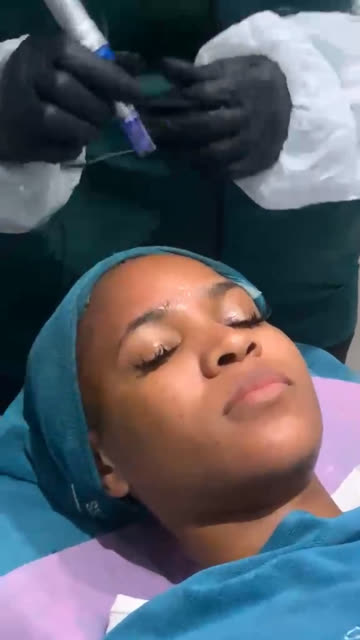

Pick one intro, one caption style and one pop-up frame. Your picks become the template for every educational video, so each post follows it and you only approve the look once. The samples use your 11 September laser video.
The intro
Your video plays for a second or two while you introduce the topic. Then a soft grey panel slides in from the left, the title comes up, and after about 4 seconds the panel slides away and your video carries on. No captions while the title is on screen.
Today let's talk about laser
The hangerWords come up one at a time. Then the key word swings onto its hook and settles, like a coat on a hanger.
Today let's talk about laser
Does laser work onevery skin tone?
From the cameraRushes in from the lens and settles. Energetic.
Today let's talk about laser
Does laser work onevery skin tone?
Soft focusSharpens out of a blur, the way a lens pulls focus. Calm and premium.
Today let's talk about laser
Does laser work onevery skin tone?
RiseLines slide up into place, like a magazine cover.
The captions
Both use a new bold caption font. What changes is how the important words are treated.
Ethan's ideaKeyword popThe important words turn big, italic and gold, with a glow and a hand-drawn underline. Gold is the one new colour: it stands out against the teal wall.
Sonia's ideaEvery line differentEach group of words gets its own style (italic, underlined, spaced capitals, script, outline, banner) and every line stays white.
The pop-ups
These replace the white text cards. A pop-up appears only while you talk about that topic, for 3–5 seconds, and then leaves. It shows your own treatment footage first. For topics you have no footage of, a realistic AI image made for that topic goes in the same frame.
The moving clip is only an idea. In the real videos, pop-ups will be photos from your treatments or AI images made for the topic, shown in one of these frames.
we treat pigmentation
Arch frame, moving clipA few seconds of the real treatment playing inside a soft arch.

Microneedling
with microneedling
Gallery frame, photoA still from the treatment in a white border, with the treatment named underneath.
Coming after this
Treatment videos built on the same look.
Treatment videos with you on top, shown in a framed portrait instead of a plain box.
Client stories: the client talks to camera while a small frame shows her before, after, or treatment.
Five hashtags on every post.
Only one voice at a time. Your voice never plays over people talking in a treatment clip.
To reply, send your three picks, for example: Intro: The hanger · Captions: Keyword pop · Pop-ups: Arch frame